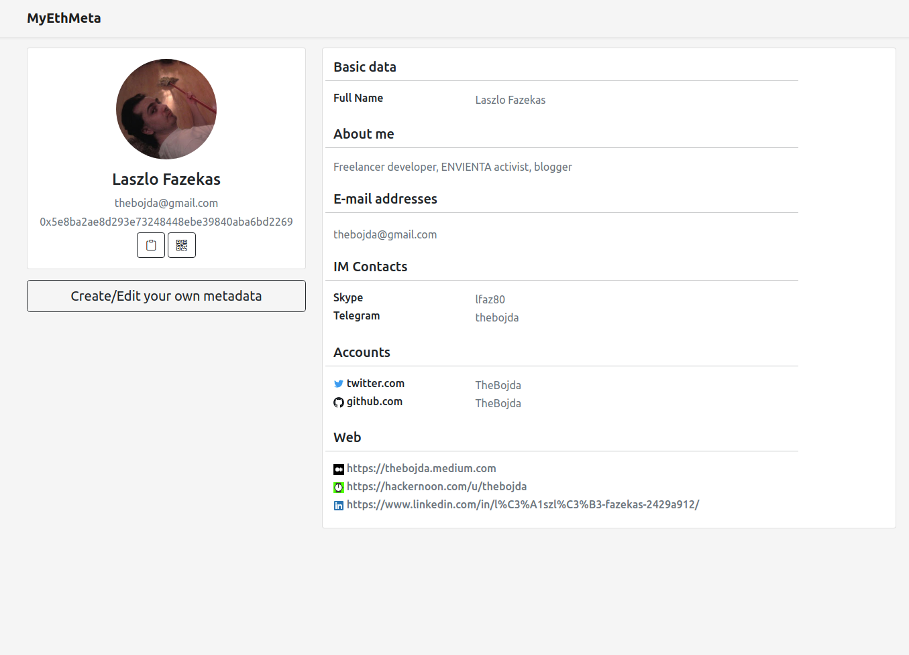

Decentralized metadata for your Ethereum account
Something like Gravatar for Ethereum
WHAT is MyEthMeta?
MyEthMeta is a decentralized metadata service for Ethereum accounts.
It is something like Gravatar, but here the metadata and your profile picture is assigned to your Ethereum address.
We have no any backend servers, you fully own your own data.
HOW does it work?
MyEthMeta stores the Ethereum address metadata mappings in a smart contract on the Polygon blockchain.
You can freely choose any URL for your metadata.
It can be any decentralized storage like IPFS or Swarm, or any centralized storage.
The metadata itself is a simple, extensible JSON file that is based on Portable Contacts (you can find the specification here).
WHY use it?
Gravatar profile pictures are used by many services like GitHub, Discuss, and WordPress.
MyEthMeta is the Gravatar of the web3 world and much more, a full metadata service for your Ethereum accout.
Let's look at some advantages of MyEthMeta:
- Your profile is assigned to your Ethereum address instead of your e-mail.
- MyEthMeta is completely decentralized. The metadata mappings are stored by a smart contract on the Polygon chain that is not owned by anybody.
- The metadata can be stored on any URL. It can be a decentralized storage like IPFS or Swarm, or any centralized storage.
- Your metadata is fully owned by you. We don't have backend servers or any backend infrastructure, everything is decentralized.
- The smart contract is deployed on the Polygon chain, because of the low gas fees. (A metadata update is about 2 cents.)
- The metadata is storead as an extensible JSON format. It is based on Portable Contacts (like Gravatar), but you can freely add custom fields to it.
- MyEthMeta is completely Open Source. The libraries, the smart contract, the profile page, etc. are licensed under the MIT licence. If I would stop maintain it, or if you don't agree with my develpoment decisions, you can freely fork it.
- We have a simple programming library for Javascript.
About me

I'm Laszlo Fazekas. CTO of Pressenger Ltd. and currently the maintainer of MyEthMeta.
I own the methmeta.org domain, but the MyEthMeta service is not owned by anybody because it's fully decentralized.
For more info, please check my MyEthMeta profile.